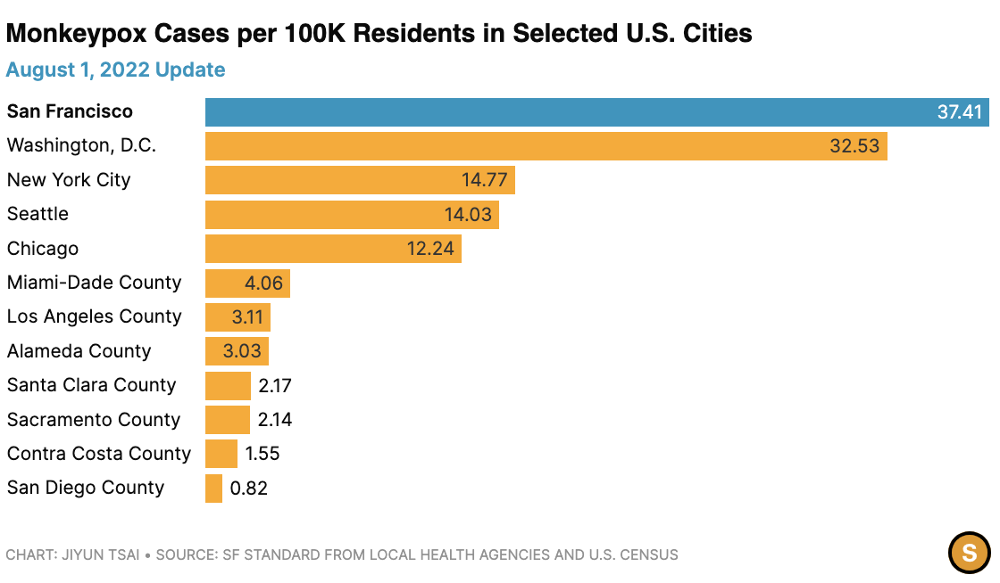
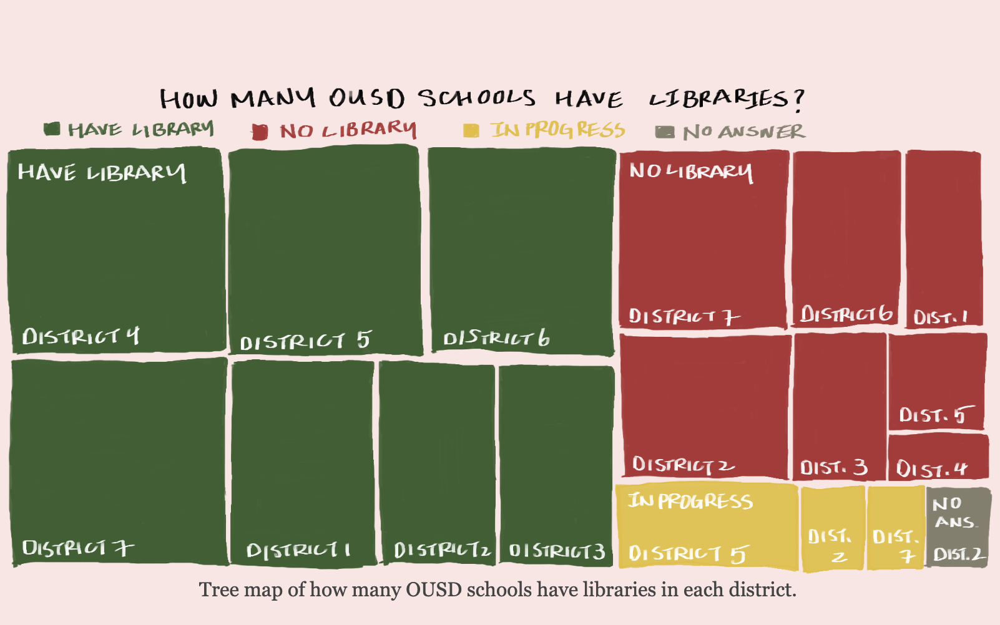

Jiyun Tsai
Hello! My name is Jiyun Tsai. I'm a multimedia graduate student at UC Berkeley Journalism School.
I analysis and visualize data-driven stories. I am currently a data viz intern at San Francisco Standard.
Analysis of American Community Survey 2021 for San Francisco
SF Standard
R Datawrapper Spreadsheet
Exodus of Young Adults Caused San Francisco’s Covid Population Drop
SF Standard
Datawrapper Spreadsheet
Layoffs Tracker for Companies located in San Francisco
SF Standard
Datawrapper Spreadsheet
After State-Imposed Cuts, What’s in Next Year’s School Budget?
SF Standard
Datawrapper Spreadsheet
Crypto, Tech Stocks and Expensive Homes: What SF’s Elected Officials Own
SF Standard
Datawrapper Spreadsheet
Monkeypox Tracker analysis from San Francisco and State Reports
SF Standard

Datawrapper Spreadsheet
Dive In: Where to Swim in San Francisco
SF Standard
 Google MyMap
Google MyMap
OUSD Libraries Closure
Oakland North

HTML CSS GoogleMyMap
US Retirement Funding Dataset
UC Berkeley
 HTML Datawrapper Infogram
HTML Datawrapper Infogram
First Visual Story Workshop
NICAR 2022
HTML SCSS Javascript Datawrapper
Mock Webpage Development
UC Berkeley
HTML CSS
Javascript Button
UC Berkeley
 HTML CSS Javascript
HTML CSS Javascript
CSS Pseudo Practice
UC Berkeley
HTML CSS